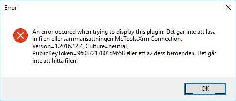
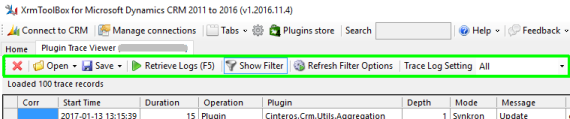
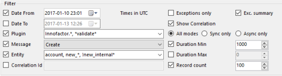
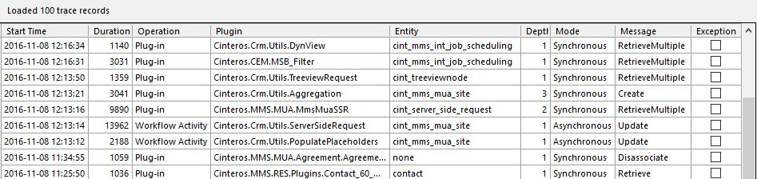

Introduction
The primary goal of the tool is to give developers and administrators of Microsoft Dynamics CRM an easy to use tool to investigate the Plugin Trace Log. This includes the possibility to filter the logs and display the information in ways not currently possible within the Microsoft Dynamics CRM UI.
Connection bug workaround
Plugin Trace Viewer 1.2017.1.21 uses a later version of XrmToolBox internal connectivity functionality than XrmToolBox itself before version 1.2017.*
This may cause errors when connecting Plugin Trace Viewer to an organization.
If the following error occurs, check the workaround below:

* Open file <XrmToolBox-path>\XrmToolBox.exe.config in a text editor.
* Locate dependentAssembly blocks for McTools.Xrm.Connection.
* Make sure the bindingRedirect oldVersion attribute has value 0.0.0.0-1.2016.12.4

* Save the file, restart XrmToolBox
How-to
Menu
-
Open
- saved filter to populate the filter options.
- selected log record (opened in CRM).
- current log query in FetchXML Builder.
-
Save
- current filter to file.
- retrieved log records (serialized to XML).
- current log query to fetchxml file.
-
Retrieve Logs
Retrieves trace log records using current filter. -
Show (Hide) Filter
Toggles section with filter options on / off. -
Refresh Filter Options
Reloads constraints and options for filter criteria. -
Trace Log Setting
Update the trace log setting in the system. This option is found in CRM under Settings, Administration, System Settings, Customization.
Filter
-
Date From/To
Defines first and last dates of log records to retrieve.
Note! All times in UTC! -
Plugin
Filter by plugin class name.
Wildcards allowed in beginning and end of name.
Several names are specified with separating commas.
Exclude names/wildcards by prepending with exclamation mark
Example: Innofactor.*, !*Logging* -
Message
Filter by message name. -
Entity
Filter by entity logical name.
Wildcards allowed in beginning and end of name.
Several names are specified with separating commas.
Exclude names/wildcards by prepending with exclamation mark
Example: account, new_*, !new_log_* -
Correlation Id
Filter by correlation id. This is a guid stored on each log record, and is easiest found by right-clicking a log record and selecting Correlation - Filter by this correlation id. -
Exceptions only
Check this to only return logs with exceptions. -
Exc. Summary
Check this to display the actual error message in the table. -
Show Correlation
Check this to display the Correlation column in the table. -
Mode
Select which modes to return. -
Duration Min/Max
This can be used to e.g. filter long running plugins. -
Records
Defines max number of records to return.
Trace log table
The table displays trace log records according to the filter.
Double click a record to open it in CRM.
Right click to delete selected or all returned records.
Right click to select records with same CorrelationId of filter by selected CorrelationId.
Discussion
Click OPEN CHAT in the bottom right corner of this web page to ask questions, give feedback, or simply to join the discussion!
Other plugins from Innofactor
FetchXML Builder can be found here: http://fxb.xrmtoolbox.com.
Me and some other colleagues at Innofactor have developed a few other cool plugins
for XrmToolBox.
Have a look at these here: http://cinteros.xrmtoolbox.com.
Visitor count for PTV and FXB since 2015-02-19:
Latest release

|
|
|---|---|
| Version | Loading version... |
| Publish date | Loading publish date... |
| Downloads (total) + |
Loading download count...
|
|
Issues
|
|
| Open | |
| Total | |